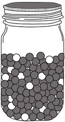
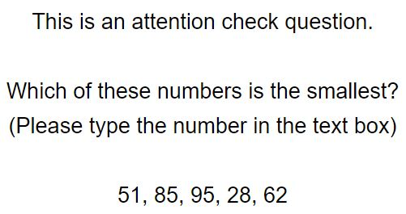

<!doctype html>
<html>
  <head>
  <title>Jars</title>
  <script src="./js/jquery.min.js"></script>
  <script src="./jspsych-6/jspsych.js"></script>
  <script src="./jspsych-6/plugins/jspsych-survey-multi-choice.js"></script>
	<script src="./jspsych-6/plugins/jspsych-html-button-response.js"></script>
  <script src="./jspsych-6/plugins/jspsych-survey-likert.js"></script>
  <script src="./jspsych-6/plugins/jspsych-survey-text.js"></script>
  <script src="./jspsych-6/plugins/jspsych-survey-text-required.js"></script>
  <script src="./jspsych-6/plugins/jspsych-image-button-response.js"></script>
  <script src="./jspsych-6/plugins/jspsych-html-slider-response-garston.js"></script>
  <script src="./jspsych-6/plugins/jspsych-instructions.js"></script>
  <script src="./jspsych-6/plugins/jspsych-html-slider-response.js"></script>
	<script src="./js/welcome.js"></script>
  <link href="./jspsych-6/css/jspsych.css" rel="stylesheet" type="text/css"></link>
  <!-- <link href="./jspsych-6/css/saoirse_slider_demo.css" rel="./css/style.css" type="text/css"></link> -->
  <link rel="./css/style.css" href="saoirse_slider_demo.css"></link>

  </head>

  <body>
	  <div id="welcome"></div>
  </body>

  <script>

// ----------------------- URNS EXPT 14 -------------------------- //
// 2 (dependency: i, sq) within-subjects design
// only 5-informant condition (remove 3-infomrant condition) ---- //
// -------------------------------------------------------------- //

// initialise timeline
var timeline = [];

// if participants get an instruction check question wrong, they will loop back to the previous instruction page
var instructionsline = [];
var practiceline = [];
var introloop = [];   // instructions about ball proportions
var introloop1 = [];  // instructions about participant's task
var introloop2 = [];  // instructions about what info (balls) friends receive

// generate a random turkcode
var turkcode = (Math.floor(Math.random() * 899999) + 100000).toString();
var pid = Math.floor(Math.random() * 100000);
var filename = "urns-expt14_" + pid + "_turkcode_" + turkcode;

// specify images to preload
var images = ['img/closeddoor.jpg', 'img/redjar.png', 'img/bluejar.png', 'img/greenjar.png', 'img/purplejar.png', 'img/blackjar.jpg',
    'img/questionball.png', 'img/redball.PNG', 'img/blueball.PNG', 'img/greenball.PNG', 'img/purpleball.PNG', 'img/redballsmall.png', 'img/blueballsmall.png', 'img/greenballsmall.png', 'img/purpleballsmall.png',
    'img/attnCheck.JPG', 'img/greyjar.PNG', 'img/whitejar.PNG', 'img/whiteball.png', 'img/greyball.PNG'];
jsPsych.pluginAPI.preloadImages(images);

// -------------------- RANDOMISE VARIABLES ------------------------ //
var informants = 5;

var dependency = ['Independent', 'Sequential'];  // dependency condition
var dependency = jsPsych.randomization.shuffle(dependency);
// console.log(dependency);

var training = ['intervention', 'control'];     // either participant receives intervention, or does not (control)
var training = jsPsych.randomization.sampleWithoutReplacement(training, 1);
console.log(training);

// randomly select the appropriate number of images/names to represent the friends
var friends = ['img/woman1.png', 'img/woman2.png', 'img/woman3.png', 'img/woman4.jpg', 'img/woman5.png', 'img/woman6.jpg', 'img/woman7.png'];
jsPsych.pluginAPI.preloadImages(friends);
var friends = jsPsych.randomization.sampleWithoutReplacement(friends, informants);

var names = ["Sarah", "Mary", "Ann", "Emma", "Jane", "Claire", "Lucy", "Olivia", "Sophia", "Mia",
             "Alice", "Amelia", "Ella", "Grace", "Chloe", "Hannah", "Lily", "Zoe", "Emily", "Anna"];
var names = jsPsych.randomization.sampleWithoutReplacement(names, informants);
var names = Array(2).fill(names).flat();  //repeat the names array twice

// randomise colours
var colourRB = ["red", "blue"];                          // red or blue first?
var colourRB = jsPsych.randomization.shuffle(colourRB);
var colourPG = ["purple", "green"];                      // purple or green first?
var colourPG = jsPsych.randomization.shuffle(colourPG);

var colourOrders = ["RBfirst", "PGfirst"];  // red-blue or purple-green jars first?
var colourOrders = jsPsych.randomization.shuffle(colourOrders);

if (colourOrders[0] == "RBfirst") {
  var colourOrder = colourRB.concat(colourPG);  // red/blue then purple/green
} else {
  var colourOrder = colourPG.concat(colourRB); // purple/green then red/blue
};
// console.log(colourOrder);

// create the slider for likelihood ratings
var extra = ['below', 'above'];    // will the slider begin below or above the 0-10 scale?
var extra = jsPsych.randomization.shuffle(extra)[0]; // randomise

var rateLabels = ["<em>Move between 0 and 10</em>", "", "0<br>Definitely the <font color=" + colourOrder[1] + ">" + colourOrder[1] + "</font> jar", "1",
                  "2", "3", "4", "5<br>Equally likely to be the " + colourOrder[1] + " or " + colourOrder[0] + " jar",
                  "6", "7", "8", "9", "10<br>Definitely the <font color=" + colourOrder[0] + ">" + colourOrder[0] + "</font> jar"];

var rateLabels2 = ["0<br>Definitely the <font color=" + colourOrder[1] + ">" + colourOrder[1] + "</font> jar", "1",
                  "2", "3", "4", "5<br>Equally likely to be the " + colourOrder[1] + " or " + colourOrder[0] + " jar",
                  "6", "7", "8", "9", "10<br>Definitely the <font color=" + colourOrder[0] + ">" + colourOrder[0] + "</font> jar",
                  "", "<em>Move between 0 and 10</em>"];

if (extra == "above") {  // if slider begins above the scale
  var minExtra = 0;      // make the min the min of the scale (0)
  var maxExtra = 12;     // make the max 2 points above the max of the scale (10)
  var startExtra = 12;   // the slider starts at the max
  var labelsExtra = rateLabels2  // use the set of rating labels with extra labels at the top end of the scale
} else {                // if slider begins below the scale
  var minExtra = -2;    // make the min 2 points below the min of the scale
  var maxExtra = 10;    // make the max the max of the scale
  var startExtra = -2;  // the slider starts at the min
  var labelsExtra = rateLabels  // use the set of rating labels with extra labels at the bottom end of the scale
};

// ------------ save data to unsw server ----------------------- //
function saveData(name, data){
  	var xhr = new XMLHttpRequest();
  	xhr.open('POST', 'save_data.php'); // 'write_data.php' is the path to the php file described above.
  	xhr.setRequestHeader('Content-Type', 'application/json');
  	xhr.send(JSON.stringify({filename: filename, filedata: data})); //specify a variable "filename"
  };

// --------------- function to start the jsPsych experiment -------------- //
function startExperiment(){

// record 1) turkcode and 2) assigned condition in the jsPsych data
jsPsych.data.addProperties({
  turkcode: turkcode,
  colourPart1: colourOrder[0],
  colourPart2: colourOrder[2],
  slider: extra,           // does slider begin above/below the scale?
  training: training,
  dependency1: dependency[0],
  dependency2: dependency[1],
  names: names
});

jsPsych.init({
  timeline: timeline,
  preload_images: images,
  // on_trial_finish: function(data){saveData(filename, jsPsych.data.get().csv())},  // use for UNSW server - uncomment to locally save data file as csv
  on_finish: function() {
    endExperiment( jsPsych.data.get().csv(), function() { document.write('<div id="endscreen" class="endscreen" style="width:1000px"><div class="endscreen" style="text-align:center; border:0px solid; padding:10px; font-size:120%; width:800px; float:right"><p><br><br><br>All done!<br><br>Your completion code is <span id="turkcode" style="font-weight:bold;font-size:130%">' + turkcode + '</span>. To receive payment for the HIT, return to the Amazon Mechanical Turk page and enter this code. Please contact us if something goes wrong and we\'ll fix it as quickly as possible.</p></div></div>') })
  }
});
};

/* save and finish */
function endExperiment(dataset,callback) {
 // $.post('submit',{"content": dataset}); // uncomment to post data
  setTimeout(callback,1000)
};

/* change the display property of a set of objects */
function setDisplay(theClass, theValue) {
   var i, classElements = document.getElementsByClassName(theClass);
   for (i = 0; i < classElements.length; i = i + 1) {
    classElements[i].style.display = theValue;
   }
};

// -------------------------- INSTRUCTIONS ---------------------------- //

var instructionsPreempt = {
  type: 'html-button-response',
  choices: ['Click here to begin'],
  button_html: '<button class="jspsych-btn" style="display:none">%choice%</button>',
  on_start: function() {setTimeout(function(){setDisplay("jspsych-btn","")}, 70)},
  is_html: true,
  stimulus: "The experiment will begin now.<br><br>The first few pages will show the instructions.<br>Make sure to read them carefully, as you will be asked questions to check that you understand them." +
  "<br><br>If you answer a question incorrectly, you will be taken back to the instructions page.<br><br>"
};
instructionsline.push(instructionsPreempt);

// -------------------- BALLS-AND-URNS TASK -------------------- //
var instructions1 = {
  type: 'html-button-response',
  choices: ['Click here to continue'],
  button_html: '<button class="jspsych-btn" style="display:none">%choice%</button>',
  on_start: function() {setTimeout(function(){setDisplay("jspsych-btn","")}, 120)},
  is_html: true,
  stimulus: "<p align='center'><table width=700 height=100% border=0><tr><td align=center valign=center>" +
    "</img></td><td align=center valign=center></img></td></tr></table>" +
    "Here is a " + colourOrder[0] + " jar and a " + colourOrder[1] + " jar.<br><br>" +
    "As you can see, in the " + colourOrder[0] + " jar, there are a lot of " + colourOrder[0] + " balls and some " + colourOrder[1] + " balls.<br>Specifically, out of 120 balls in the " + colourOrder[0] + " jar, 100 are " + colourOrder[0] + " and 20 are " + colourOrder[1] + ".<br><br>" +
    "The opposite is true for the " + colourOrder[1] + " jar, in that out of 120 balls in the " + colourOrder[1] + " jar,<br>100 are " + colourOrder[1] + " and 20 are " + colourOrder[0] + ".<br><br>"
};
introloop.push(instructions1); //push instructions to an introloop node

// create the 1st instruction check question
var instructQ1Answers = ["100/120 balls are " + colourOrder[0] + "", "20/120 of balls are " + colourOrder[0] + "",
                          "All balls are " + colourOrder[0] + "", "100/120 balls are " + colourOrder[1] + ""];
var instructQ1Shuffled = jsPsych.randomization.shuffle(instructQ1Answers);
var correctString1 = '{"Q0":"' + instructQ1Answers [0] + '"}';
var instruct1Correct = false;
var instructQ1Check = {
  type: "survey-multi-choice",
  preamble: ["<p align='center'><b>Check your knowledge!</b></p>"],
  questions: [{prompt: "<b>Question:</b> In the " + colourOrder[0] + " jar;",
              options: instructQ1Shuffled,
              required: true}],
  on_finish: function(data) {
      if(data.responses == correctString1) {instruct1Correct = true;}
  }
};
introloop.push(instructQ1Check);

// define the splash screen shown if participants answer incorrectly
var splash_screen1 = {
  type: 'html-button-response',
  button_html: '<button class="jspsych-btn">%choice%</button>',
  choices: ['Click here to read the instructions again'],
  on_start: function() {setTimeout(function(){setDisplay("jspsych-btn","")}, 500)},
  is_html: true,
  stimulus: 'Your answer was incorrect.'
};

// define an additional conditional that will only show the splash screen
// if the answer was wrong
var conditional_splash1 = {
  timeline: [splash_screen1],
  conditional_function: function(data) {
  return !instruct1Correct // skip if correct
  }
};
introloop.push(conditional_splash1);

// add the first instructions block + check question to a loop node
var loop_node = {
  timeline: introloop,
  loop_function: function(data) {return !instruct1Correct} // stop looping if correct
};
instructionsline.push(loop_node);

// ------------------ describe objective of experiment -------------------- //
var task = {
  type: 'html-button-response',
  button_html: '<button class="jspsych-btn" style="display:none">%choice%</button>',
  choices: ['Click here to continue'],
  on_start: function() {setTimeout(function() {setDisplay("jspsych-btn","")}, 70)},
  is_html: true,
  stimulus: "<p align='center'><table width=700 height=100% border=0><tr><td align=center valign=center>" +
    "</img></td><td align=center valign=center></img></td></tr></table>" +
    "I will randomly select one of these two jars (and I won't tell you which jar I picked).<br><br>" +
    "From that selected jar, I will randomly take one ball out to show you.<br><br>" +
    "Your task is to <strong>guess which of the two jars I selected.</strong><br><br>"
};
introloop1.push(task);

var instructQ3Answers = ["Guess which of the two jars I selected",
"Count how many balls are in the jar", "Make bets", "Paint a jar"];
var instructQ3Shuffled = jsPsych.randomization.shuffle(instructQ3Answers);
var correctString3 = '{"Q0":"' + instructQ3Answers [0] + '"}';

var instruct3Correct = false;
var instructQ3Check = {
  type: "survey-multi-choice",
  preamble: ["<p align='center'><b>Check your knowledge!</b></p>"],
  questions: [{prompt:"<b>Question:</b> Your task is to;",
              options: instructQ3Shuffled,
              required:true}],
  on_finish: function(data) {
      if(data.responses == correctString3) {instruct3Correct = true;}
    }
};
introloop1.push(instructQ3Check);

var conditional_splash3 = {
  timeline: [splash_screen1],
  conditional_function: function(data) {return !instruct3Correct} // skip if correct
};
introloop1.push(conditional_splash3);

var loop_node3 = {
  timeline: introloop1,
  loop_function: function(data) {return !instruct3Correct} // stop looping if correct
};
instructionsline.push(loop_node3);

var instructionsTimeline = {
  timeline: instructionsline,
};
// timeline.push(instructionsTimeline);

// ------------------------ PRACTICE DRAWS ----------------------------- //
var nPracDraws = 12;
var nPracTrials = 2;

var introPrac = {                     // instructions for the practice draws
  type: 'html-button-response',
  button_html: '<button class="jspsych-btn" style="display:none">%choice%</button>',
  choices: ['Click here to begin the practice trials'],
  on_start: function() {setTimeout(function() {setDisplay("jspsych-btn","")}, 70)},
  stimulus: "To familiarise yourself with the jars, you will run through " + nPracTrials + " practice trials.<br><br>" +
      "In these trials, you will draw " + nPracDraws + " balls from a jar (either the " + colourOrder[0] + " jar or the " + colourOrder[1] + " jar).<br>Once you have seen the colour of " + nPracDraws + " balls, you will make your best guess about which jar was selected.<br><br>"
};
practiceline.push(introPrac);

var pracJars = [colourOrder[0], colourOrder[1], colourOrder[0]]; // ensures 1 jar of each colour is selected

var y;
for (y = 0; y < nPracTrials; y++) {  // loops through y practice trials

  var array1 = [pracJars[y], pracJars[y+1]]; // the two possible balls to be sampled
  var drawBalls = jsPsych.randomization.sampleWithReplacement(array1, nPracDraws, [5, 1]); // sample non-dominant colour with 1/6 the probability of dominant colour

  var z = 0;
  for (z = 0; z < nPracDraws; z++) {   // loops through z draws per practice trial
    var toDraw = {                     // show unknown jar before each draw
      type: 'image-button-response',
      stimulus: 'img/blackjar.jpg',
      choices: ['Click here to draw a ball from the jar'],
      response_ends_trial: true
    };
    // practiceline.push(toDraw);

    var ballDrawn = {        // show the sampled ball
      type: 'html-button-response',
      choices: ['Click here to continue'],
      stimulus: ["</img><br>" +
        "You sampled a <font color=" + drawBalls[z] + ">" + drawBalls[z] + "</font> ball.<br>"]
    };
    // practiceline.push(ballDrawn);
  };

  var allBallsDrawn = {              // once all z balls have been sampled
    type: 'html-button-response',    // display them all in a 2 x 6 table
    stimulus: ["Here are the " + nPracDraws + " balls you sampled.<font color=white>P" + [y+1] + "</font>"],
    choices: ['Click here to continue'],
    button_html: '<button class="jspsych-btn" style="display:none">%choice%</button>',
    on_start: function() {setTimeout(function() {setDisplay("jspsych-btn","")}, 30)},
    prompt: ["<table width=450 height=100% border=0><tr>" +
    "<td align=center valign=center></img></td>" +
    "<td align=center valign=center></img></td>" +
    "<td align=center valign=center></img></td>" +
    "<td align=center valign=center></img></td>" +
    "<td align=center valign=center></img></td>" +
    "<td align=center valign=center></img></td></tr>" +
    "<tr><td align=center valign=center></img></td>" +
    "<td align=center valign=center></img></td>" +
    "<td align=center valign=center></img></td>" +
    "<td align=center valign=center></img></td>" +
    "<td align=center valign=center></img></td>" +
    "<td align=center valign=center></img></td></tr>"]
  };
  practiceline.push(allBallsDrawn);

  var rate = {              // elicit likelihood rating
    type: 'html-slider-response',
    stimulus: "<font color=white>PQ" + [y+1] + "</font><br>" +  // log which trial participant is responding to
      "<p style=text-align:center>Based on the balls you saw,<br>" +
      "how likely is it that the selected jar was the " + colourOrder[1] + " jar or the " + colourOrder[0] + " jar?",
    min: 0,  // these will differ depending on whether participant was
    max: 10,  // randomly assigned to see the slider above vs. below the scale
    step: 1,
    start: startExtra,
    labels: labelsExtra,
    prompt: "<br><br><br><br><br>",
    warning: "Your answer must be between 0 and 10.",
    no_less: 0,
    no_more: 10
  };
  practiceline.push(rate);

  if (y < 1) {    // text for the button depends on which practice trial participant is up to
    var pracBut = ['Click here to begin the next trial']
  } else {
    var pracBut = ['Click here to continue']
  };

  var actualJar = {              // reveal the identity of the sampled jar
    type: 'html-button-response',
    stimulus: ["</img><br>" +
      "In that practice trial, you sampled from the <font color=" + pracJars[y] + ">" + pracJars[y] + "</font> jar.<br><br>"],
    choices: pracBut,
    button_html: '<button class="jspsych-btn" style="display:none">%choice%</button>',
    on_start: function() {setTimeout(function() {setDisplay("jspsych-btn","")}, 30)}
  };
  practiceline.push(actualJar);
};

var practiceTimeline = {
  timeline: practiceline,
};
// timeline.push(practiceTimeline);

// -------------------- introduce friends ------------------------ //
var friendsHelp = {
    type: 'html-button-response',
    stimulus: ["You have completed the practice trials.<br><br>" +
      "In this experiment, you will be helped by " + informants + " of my friends.<br>" +
      "I will randomly take one ball out of the selected jar for each of my friends, and show one ball to each friend.<br>" +
      "After showing each ball, I will place it back in the jar before taking another one out for the next friend.<br><br>" +
      "Based on the ball they saw, each of my friends will make their best guess about which jar I selected.<br><br>"],
    choices: ['Click here to continue'],
    button_html: '<button class="jspsych-btn" style="display:none">%choice%</button>',
    on_start: function() {setTimeout(function() {setDisplay("jspsych-btn","")}, 80)}
};
introloop2.push(friendsHelp);

// dependency manipulation check
var instructQ2Answers = ["One different ball each", "The same ball"];
var instructQ2Shuffled = jsPsych.randomization.shuffle(instructQ2Answers);
var correctString2 = '{"Q0":"' + instructQ2Answers [0] + '"}';

var instruct2Correct = false;
var instructQ2Check = {
  type: "survey-multi-choice",
  preamble: ["<p align='center'><b>Check your knowledge!</b></p>"],
  questions: [{prompt:"<b>Question:</b> My friends will see;",
              options: instructQ2Shuffled,
              required:true}],
  on_finish: function(data) {
      if(data.responses == correctString2) {instruct2Correct = true;}
    }
};
introloop2.push(instructQ2Check);

var conditional_splash2 = {
  timeline: [splash_screen1],
  conditional_function: function(data) {return !instruct2Correct} // skip if correct
};
introloop2.push(conditional_splash2);

var loop_node2 = {
  timeline: introloop2,
  loop_function: function(data) {return !instruct2Correct} // stop looping if correct
};
// timeline.push(loop_node2);

// -------------------------- CHOICE TASK ----------------------------- //
// describe independent vs. sequential testimony
var socialI = ["<b>Independent</b> information<br>Each friend guesses in separate rooms, without knowing what the other friends guessed.<br><br>"];
var socialSq = ["<b>Sequential</b> information<br>The friends guess one after the other, in the same room.<br>" +
                "So each friend hears the previous friends' guesses, and uses that information to inform their own guess.<br><br>"];

var egI = "Here is an example of <b>independent</b> information.<br><br>"
var egSq = "Here is an example of <b>sequential</b> information.<br><br>"

if (dependency[0] == 'Independent') {
  var social1 = socialI;  // explanation of independent testimony comes before
  var social2 = socialSq; // explanation of sequential testimony
  var egA = egI;    // when testimony is given, preface with "Here is an example of i/sq information..."
  var egB = egSq;
} else {
  var social1 = socialSq;
  var social2 = socialI;
  var egA = egSq;
  var egB = egI;
};

var twoTypes = {
  type: 'html-button-response',
  stimulus: ["We are interested in what people think about this sort of social information<br>" +
  "(i.e., the information provided by my friends).<br><br>" +
  "We will now show you 2 types of social information.<br>" +
  "In particular, we will show you how these 2 types differ from each other.<br><br>" +
  "1. " + social1 +
  "2. " + social2],
  choices: ['Click here to see the examples'],
  button_html: '<button class="jspsych-btn" style="display:none">%choice%</button>',
  on_start: function() {setTimeout(function() {setDisplay("jspsych-btn","")}, 120)}
};
timeline.push(twoTypes);

var gwJars = {
  type: 'html-button-response',
  stimulus: ["<p align='center'><table width=700 height=100% border=0><tr><td align=center valign=center>" +
    // "</img></td><td align=center valign=center></img></td></tr></table></p>" +
    "</img></td><td align=center valign=center></img></td></tr></table>" +
    "For this example, we will use grey and white jars.<br><br>" +
    "As you can see, the ball proportions in these jars are the same as the ball proportions in the " + colourOrder[0] + " and " + colourOrder[1] + " jars that you previously saw.<br>" +
    "Of the 120 balls in the grey jar, 100 are grey, and 20 are white.<br>" +
    "In the white jar, 100 balls are white, and 20 are grey.<br><br>" +
    "Like you, my friends understand that the colour of the ball does not perfectly predict the colour of the jar<br>" +
    "(that is, there is a small chance of drawing a white ball from the grey jar, or a grey ball from the white jar).<br><br>"],
  choices: ['Click here to continue'],
  button_html: '<button class="jspsych-btn" style="display:none">%choice%</button>',
  on_start: function() {setTimeout(function() {setDisplay("jspsych-btn","")}, 80)}
};
timeline.push(gwJars);

// ------------ start building long screen leading up to choice task --------------- //
var p;             // build code to show images of friends with testimony
// the following table class = "allborders" or "outsideborder" have been defined in the jspsych.css file
var picsI = ['<table class="allborders" width=800 height=100% border=1><tr>']; // works for independent
var picsSq = ['<table class="outsideborder" width=800 height=100% border=1><tr>'];
for (p = 0; p < informants; p++) {
  var pic = ["<td align=center valign=center><strong>" + names[0+p] + "</strong><br /></img></img></td>"];
  var picsI = picsI + pic;
  var picsSq = picsSq + pic;
};

function showGuesses(colourX,  // the colour implicated by friends' guesses
                     colourY,  // the colour of ball seen by participant
                     egA,      // which dependency condition is introduced as an example first?
                     egB,      // which dependency condition is introduced as an example second?
                     example,  // is this loop through the evidence the example loop? true/false
                     trialDep, // if not example trials, which dependency trial are we up to? /2
                     second) { // if not example trials, is this the second trial?

  var iLooked = ["<td align=center valign=center>\"I looked at my ball "];
  var iGuess = ["<strong>I guess the <font color=" + colourX + ">" + colourX + "</font> jar was selected.</strong><br>I did not see any of the balls given to the others.\"</td>"];

  var egI1 =
  picsI + "</tr>" +  // independent testimony of the 1st friend
      iLooked + "and " + iGuess + "</tr></table><br><br>" //1st

  var egI2 =
  picsI + "</tr>" +  // independent testimony of the 2nd friend
      iLooked + "and " + iGuess + //1st
      iLooked + "and " + iGuess + "</tr></table><br><br>" //2nd

  var egI3 = //"<table width=900 height=100% border=0><tr>" +
  picsI + "</tr>" +  // independent testimony of the 3rd friend
      iLooked + "and " + iGuess + //1st
      iLooked + "and " + iGuess + //2nd
      iLooked + "and " + iGuess + "</tr></table><br><br>" //3rd

  var egI4 = //"<table width=900 height=100% border=0><tr>" +
  picsI + "</tr>" +  // independent testimony of the 4th friend
      iLooked + "and " + iGuess + //1st
      iLooked + "and " + iGuess + //2nd
      iLooked + "and " + iGuess + //3rd
      iLooked + "and " + iGuess + "</tr></table><br><br>" //4th

  var egI5 = //"<table width=900 height=100% border=0><tr>" +
  picsI + "</tr>" +  // independent testimony of the 5th friend
      iLooked + "and " + iGuess + //1st
      iLooked + "and " + iGuess + //2nd
      iLooked + "and " + iGuess + //3rd
      iLooked + "and " + iGuess + //4th
      iLooked + "and " + iGuess + "</tr></table><br><br>" //5th

  var egSq1 =  //"<table width=900 height=100% border=0><tr>" +
  picsSq + "</tr>" +   // sequential testimony of the 1st friend
      iLooked + "and " + iGuess + "</tr></table><br><br>" //1st

  var egSq2 =  //"<table width=900 height=100% border=0><tr>" +
  picsSq + "</tr>" +   // sequential testimony of the 2nd friend
      iLooked + "and " + iGuess + // 1st
      iLooked + "<i>and</i> I thought about what " + names[0] + " said.<br>" + iGuess + "</tr></table><br><br>" //2nd

  var egSq3 =  //"<table width=900 height=100% border=0><tr>" +
  picsSq + "</tr>" +   // sequential testimony of the 3rd friend
      iLooked + "and " + iGuess + // 1st
      iLooked + "<i>and</i> I thought about what " + names[0] + " said.<br>" + iGuess +  //2nd
      iLooked + "<i>and</i> I thought about what " + names[0] + " and " + names[1] + " said.<br>" + iGuess + "</tr></table><br><br>" //3rd

  var egSq4 =  //"<table width=900 height=100% border=0><tr>" +
  picsSq + "</tr>" +   // sequential testimony of the 4th friend
      iLooked + "and " + iGuess + // 1st
      iLooked + "<i>and</i> I thought about what " + names[0] + " said.<br>" + iGuess +  //2nd
      iLooked + "<i>and</i> I thought about what " + names[0] + " and " + names[1] + " said.<br>" + iGuess +  //3rd
      iLooked + "<i>and</i> I thought about what " + names[0] + ", " + names[1] + ", and " + names[2] + " said.<br>" + iGuess + "</tr></table><br><br>" //4th

  var egSq5 =  //"<table width=900 height=100% border=0><tr>" +
  picsSq + "</tr>" +   // sequential testimony of the 5th friend
      iLooked + "and " + iGuess + // 1st
      iLooked + "<i>and</i> I thought about what " + names[0] + " said.<br>" + iGuess +  //2nd
      iLooked + "<i>and</i> I thought about what " + names[0] + " and " + names[1] + " said.<br>" + iGuess +  //3rd
      iLooked + "<i>and</i> I thought about what " + names[0] + ", " + names[1] + ", and " + names[2] + " said.<br>" + iGuess +  //4th
      iLooked + "<i>and</i> I thought about what " + names[0] + ", " + names[1] + ", " + names[2] + ", and " + names[3] + " said.<br>" + iGuess + "</tr></table><br><br>" //5th

  if (dependency[0] == 'Independent') { // if the i condition is randomised to come first
    var egFriend1 = egI1;   // then the first friend gives independent testimony
    var egFriend2 = egI2;
    var egFriend3 = egI3;
    var egFriend4 = egI4;
    var egFriend5 = egI5;
    var egFriendB1 = egSq1;  // and sequential testimony comes in the second trial
    var egFriendB2 = egSq2;
    var egFriendB3 = egSq3;
    var egFriendB4 = egSq4;
    var egFriendB5 = egSq5;
    var showPicsA = [picsI + "</tr></table>"];
    var showPicsB = [picsSq + "</tr></table>"];

  } else {
    var egFriend1 = egSq1;
    var egFriend2 = egSq2;
    var egFriend3 = egSq3;
    var egFriend4 = egSq4;
    var egFriend5 = egSq5;
    var egFriendB1 = egI1;
    var egFriendB2 = egI2;
    var egFriendB3 = egI3;
    var egFriendB4 = egI4;
    var egFriendB5 = egI5;
    var showPicsA = [picsSq + "</tr></table>"];
    var showPicsB = [picsI + "</tr></table>"];
  };

  if (second == true) {          // if we are up to the 2nd trial,
    var egFriend1 = egFriendB1;  // then the 1st friend should be the 1st friend from the 2nd dependency condition
    var egFriend2 = egFriendB2;
    var egFriend3 = egFriendB3;
    var egFriend4 = egFriendB4;
    var egFriend5 = egFriendB5;
  };

  var rateLabels = ["<em>Move between 0 and 10</em>", "", "0<br>Definitely the <font color=" + colourX + ">" + colourX + "</font> jar", "1",
                    "2", "3", "4", "5<br>Equally likely to be the " + colourX + " or " + colourY + " jar",
                    "6", "7", "8", "9", "10<br>Definitely the <font color=" + colourY + ">" + colourY + "</font> jar"];

  var rateLabels2 = ["0<br>Definitely the <font color=" + colourX + ">" + colourX + "</font> jar", "1",
                    "2", "3", "4", "5<br>Equally likely to be the " + colourX + " or " + colourY + " jar",
                    "6", "7", "8", "9", "10<br>Definitely the <font color=" + colourY + ">" + colourY + "</font> jar",
                    "", "<em>Move between 0 and 10</em>"];

  if (extra == "above") {  // if slider begins above the scale
    var minExtra = 0;      // make the min the min of the scale (0)
    var maxExtra = 12;     // make the max 2 points above the max of the scale (10)
    var startExtra = 12;   // the slider starts at the max
    var labelsExtra = rateLabels2  // use the set of rating labels with extra labels at the top end of the scale
  } else {                // if slider begins below the scale
    var minExtra = -2;    // make the min 2 points below the min of the scale
    var maxExtra = 10;    // make the max the max of the scale
    var startExtra = -2;  // the slider starts at the min
    var labelsExtra = rateLabels  // use the set of rating labels with extra labels at the bottom end of the scale
  };

  var exA = {
    type: 'html-button-response',
    button_html: '<button class="jspsych-btn" style="display:none">%choice%</button>',
    choices: ['Click the button to hear ' + names[0] + '\'s guess'],
    on_start: function() {setTimeout(function(){setDisplay("jspsych-btn","")}, 10)},
    is_html: true,
    stimulus: egA + showPicsA + "<br><br>"
    // stimulus: egA + picsI + "</tr></table>" + "<br><br>"
  };
  timeline.push(exA);

  var ex1 = {   // 1st informant
    type: 'html-button-response',
    button_html: '<button class="jspsych-btn" style="display:none">%choice%</button>',
    choices: ['Click the button to hear ' + names[1] + '\'s guess.'],
    on_start: function() {setTimeout(function(){setDisplay("jspsych-btn","")}, 50)},
    is_html: true,
    stimulus: egA + egFriend1
  };
  timeline.push(ex1);

  var rating1 = {              // elicit likelihood rating
    type: 'html-slider-response-garston',
    stimulus: "<font color=white>" + trialDep + "-1" + "</font><br>" +
      "<p style=text-align:center>Based on the guess(es) so far," +
      "<p>how likely is it that the selected jar was the " + colourX + " jar or the " + colourY + " jar?",
    min: minExtra,  // these will differ depending on whether participant was
    max: maxExtra,  // randomly assigned to see the slider above vs. below the scale
    step: 1,
    start: startExtra,
    labels: labelsExtra,
    prompt: "<br><br><br><br><br>",
    warning: "Your answer must be between 0 and 10.",
    no_less: 0,
    no_more: 10
  };
  if (example == false) {timeline.push(rating1);};

  var ex2 = {   // 2nd informant
    type: 'html-button-response',
    button_html: '<button class="jspsych-btn" style="display:none">%choice%</button>',
    choices: ['Click the button to hear ' + names[2] + '\'s guess.'],
    on_start: function() {setTimeout(function(){setDisplay("jspsych-btn","")}, 50)},
    is_html: true,
    stimulus: egA + egFriend2
  };
  timeline.push(ex2);

  var rating2 = {              // elicit likelihood rating
    type: 'html-slider-response-garston',
    stimulus: "<font color=white>" + trialDep + "-2" + "</font><br>" +
      "<p style=text-align:center>Based on the guess(es) so far," +
      "<p>how likely is it that the selected jar was the " + colourX + " jar or the " + colourY + " jar?",
    min: minExtra,  // these will differ depending on whether participant was
    max: maxExtra,  // randomly assigned to see the slider above vs. below the scale
    step: 1,
    start: startExtra,
    labels: labelsExtra,
    prompt: "<br><br><br><br><br>",
    warning: "Your answer must be between 0 and 10.",
    no_less: 0,
    no_more: 10
  };
  if (example == false) {timeline.push(rating2);};

  var ex3 = {
    type: 'html-button-response',
    button_html: '<button class="jspsych-btn" style="display:none">%choice%</button>',
    choices: ['Click the button to hear ' + names[3] + '\'s guess.'],
    on_start: function() {setTimeout(function(){setDisplay("jspsych-btn","")}, 60)},
    is_html: true,
    stimulus: egA + egFriend3
  };
  timeline.push(ex3);

  var rating3 = {              // elicit likelihood rating
    type: 'html-slider-response-garston',
    stimulus: "<font color=white>" + trialDep + "-3" + "</font><br>" +
      "<p style=text-align:center>Based on the guess(es) so far," +
      "<p>how likely is it that the selected jar was the " + colourX + " jar or the " + colourY + " jar?",
    min: minExtra,  // these will differ depending on whether participant was
    max: maxExtra,  // randomly assigned to see the slider above vs. below the scale
    step: 1,
    start: startExtra,
    labels: labelsExtra,
    prompt: "<br><br><br><br><br>",
    warning: "Your answer must be between 0 and 10.",
    no_less: 0,
    no_more: 10
  };
  if (example == false) {timeline.push(rating3);};

  // 4th informant
  var ex4 = {
    type: 'html-button-response',
    button_html: '<button class="jspsych-btn" style="display:none">%choice%</button>',
    choices: ['Click the button to hear ' + names[4] + '\'s guess'],
    on_start: function() {setTimeout(function(){setDisplay("jspsych-btn","")}, 60)},
    is_html: true,
    stimulus: egA + egFriend4
  };
  timeline.push(ex4);

  var rating4 = {              // elicit likelihood rating
    type: 'html-slider-response-garston',
    stimulus: "<font color=white>" + trialDep + "-4" + "</font><br>" +
      "<p style=text-align:center>Based on the guess(es) so far," +
      "<p>how likely is it that the selected jar was the " + colourX + " jar or the " + colourY + " jar?",
    min: minExtra,  // these will differ depending on whether participant was
    max: maxExtra,  // randomly assigned to see the slider above vs. below the scale
    step: 1,
    start: startExtra,
    labels: labelsExtra,
    prompt: "<br><br><br><br><br>",
    warning: "Your answer must be between 0 and 10.",
    no_less: 0,
    no_more: 10
  };
  if (example == false) { timeline.push(rating4);}

  // 5th informant
  var ex5 = {
    type: 'html-button-response',
    button_html: '<button class="jspsych-btn" style="display:none">%choice%</button>',
    choices: ['Click here to continue'],
    on_start: function() {setTimeout(function(){setDisplay("jspsych-btn","")}, 60)},
    is_html: true,
    stimulus: egA + egFriend5
  };
  if (example == false) { timeline.push(ex5);}

  var rating5 = {              // elicit likelihood rating
    type: 'html-slider-response-garston',
    stimulus: "<font color=white>" + trialDep + "-5" + "</font><br>" +
      "<p style=text-align:center>Based on the guess(es) so far," +
      "<p>how likely is it that the selected jar was the " + colourX + " jar or the " + colourY + " jar?",
    min: minExtra,  // these will differ depending on whether participant was
    max: maxExtra,  // randomly assigned to see the slider above vs. below the scale
    step: 1,
    start: startExtra,
    labels: labelsExtra,
    prompt: "<br><br><br><br><br>",
    warning: "Your answer must be between 0 and 10.",
    no_less: 0,
    no_more: 10
  };
  if (example == false) { timeline.push(rating5);}

  var lastFriend = egFriend5;

  var exB = {                                        // start 2nd trial
    type: 'html-button-response',
    button_html: '<button class="jspsych-btn" style="display:none">%choice%</button>',
    choices: ['Click the button to hear ' + names[0] + '\'s guess'],
    on_start: function() {setTimeout(function(){setDisplay("jspsych-btn","")}, 10)},
    is_html: true,
    stimulus: egA + lastFriend + egB + showPicsB + "<br><br>"
  };
  if (example == true) {timeline.push(exB);};

  var exB1 = {   // 1st informant
    type: 'html-button-response',
    button_html: '<button class="jspsych-btn" style="display:none">%choice%</button>',
    choices: ['Click the button to hear ' + names[1] + '\'s guess.'],
    on_start: function() {setTimeout(function(){setDisplay("jspsych-btn","")}, 50)},
    is_html: true,
    stimulus: egA + lastFriend + egB + egFriendB1
  };
  if (example == true) {timeline.push(exB1);};

  var exB2 = {   // 2nd informant
    type: 'html-button-response',
    button_html: '<button class="jspsych-btn" style="display:none">%choice%</button>',
    choices: ['Click the button to hear ' + names[2] + '\'s guess.'],
    on_start: function() {setTimeout(function(){setDisplay("jspsych-btn","")}, 50)},
    is_html: true,
    stimulus: egA + lastFriend + egB + egFriendB2
  };
  if (example == true) {timeline.push(exB2);};

  var exB3 = {
    type: 'html-button-response',
    button_html: '<button class="jspsych-btn" style="display:none">%choice%</button>',
    choices: ['Click the button to hear ' + names[3] + '\'s guess.'],
    on_start: function() {setTimeout(function(){setDisplay("jspsych-btn","")}, 60)},
    is_html: true,
    stimulus: egA + lastFriend + egB + egFriendB3
  };
  if (example == true) {timeline.push(exB3);};

  // 4th informant
  var exB4 = {
    type: 'html-button-response',
    button_html: '<button class="jspsych-btn" style="display:none">%choice%</button>',
    choices: ['Click the button to hear ' + names[4] + '\'s guess'],
    on_start: function() {setTimeout(function(){setDisplay("jspsych-btn","")}, 60)},
    is_html: true,
    stimulus: egA + lastFriend + egB + egFriendB4
  };
  if (example == true) {timeline.push(exB4);};

  var exB5 = {
    type: 'html-button-response',
    button_html: '<button class="jspsych-btn" style="display:none">%choice%</button>',
    choices: ['Click here to continue'],
    on_start: function() {setTimeout(function(){setDisplay("jspsych-btn","")}, 60)},
    is_html: true,
    stimulus: egA + lastFriend + egB + egFriendB5
  };
  if (example == true) {timeline.push(exB5);};

  var lastFriendB = egFriendB5;

  // ------------- show example own-balls ------------------- //
  var showFriendBalls = {  // after showing example testimonies
    type: 'html-button-response',
    button_html: '<button class="jspsych-btn" style="display:none">%choice%</button>',
    choices: ['Click to continue'],
    on_start: function() {setTimeout(function(){setDisplay("jspsych-btn","")}, 60)},
    is_html: true,
    stimulus: egA + lastFriend + egB + lastFriendB  +
      "You can see that in both cases, all " + informants + " friends guessed the grey jar was selected.<br><br>" +
      "But how they came to make that guess is different...<br>" +
      "Let's take a look at the ball each friend received.<br><br>"
  };
  if (example == true) {timeline.push(showFriendBalls);};

  var whichBall = Array(10).fill('questionball.png');

  var explainI = ["Here you can see that each friend made a guess according to the ball they received.<br><br>" +
    "Since the friends are independent of each other, the only evidence they have comes from their own ball.<br><br>"];

  var explainSq = ["Here you can see that the last two friends have copied the guesses given by earlier friends.<br><br>" +
    names[3] + " and " + names[4] + " guessed 'grey' even though they each received a white ball.<br><br>" +
    "Why did this happen?<br><br>" +
    "Let's think about " + names[4] + "'s situation.<br>" +
    "She has heard 4 guesses for the grey jar but now receives 1 white ball.<br>" +
    "Given this evidence, it is possible that the selected jar was the grey jar and not the white jar.<br>" +
    names[4] + " is being influenced by evidence she's heard from other people - and she guesses 'grey'.<br><br>"]

  for (var i = 0; i < informants*2; i++) {

    if (dependency[0] == 'Independent') {
      var indexI = 0;
      var indexSq = 5;

      if (i < 8) {
        whichBall[i] = ['greyball.PNG'];
      } else {
        whichBall[i] = ['whiteball.png'];
      }
    } else {
      var indexI = 5;
      var indexSq = 0;

      if (i < 3 | i > 4) {
        whichBall[i] = ['greyball.PNG'];
      } else {
        whichBall[i] = ['whiteball.png'];
      }
    };

  var showBallsInd = ["Here is an example of <b>independent</b> information.<br><br>" +
    '<table class="allborders" width=800 height=100% border=1><tr>' +
    "<td align=center valign=center><strong>" + names[0] + "</strong><br /></img></img></td>" +
    "<td align=center valign=center><strong>" + names[1] + "</strong><br /></img></img></td>" +
    "<td align=center valign=center><strong>" + names[2] + "</strong><br /></img></img></td>" +
    "<td align=center valign=center><strong>" + names[3] + "</strong><br /></img></img></td>" +
    "<td align=center valign=center><strong>" + names[4] + "</strong><br /></img></img></td></tr>" +
    iLooked + "and " + iGuess + //1st
    iLooked + "and " + iGuess + //2nd
    iLooked + "and " + iGuess + //3rd
    iLooked + "and " + iGuess + //4th
    iLooked + "and " + iGuess + "</tr></table><br>"];

  var showBallsSeq = ["Here is an example of <b>sequential</b> information.<br><br>" +
    '<table class="outsideborder" width=800 height=100% border=1><tr>' +
    "<td align=center valign=center><strong>" + names[0] + "</strong><br /></img></img></td>" +
    "<td align=center valign=center><strong>" + names[1] + "</strong><br /></img></img></td>" +
    "<td align=center valign=center><strong>" + names[2] + "</strong><br /></img></img></td>" +
    "<td align=center valign=center><strong>" + names[3] + "</strong><br /></img></img></td>" +
    "<td align=center valign=center><strong>" + names[4] + "</strong><br /></img></img></td></tr>" +
    iLooked + "and " + iGuess + // 1st
    iLooked + "<i>and</i> I thought about what " + names[0] + " said.<br>" + iGuess +  //2nd
    iLooked + "<i>and</i> I thought about what " + names[0] + " and " + names[1] + " said.<br>" + iGuess +  //3rd
    iLooked + "<i>and</i> I thought about what " + names[0] + ", " + names[1] + ", and " + names[2] + " said.<br>" + iGuess +  //4th
    iLooked + "<i>and</i> I thought about what " + names[0] + ", " + names[1] + ", " + names[2] + ", and " + names[3] + " said.<br>" + iGuess + "</tr></table><br>" //5th
  ];

  if (dependency[0] == "Independent") {
    var whichStim = showBallsInd + showBallsSeq;
    if (i < 4) {
      var combinedStim = showBallsInd;
    } else if (i == 4) {
      var combinedStim = showBallsInd + explainI + "Now let's see which balls were sampled in the <strong>sequential</strong> case.<br>";
    } else if (i > 4 & i < 9) {
      var combinedStim = showBallsSeq;
    } else {
      var combinedStim = showBallsSeq + explainSq;
    }
  };

  if (dependency[0] == "Sequential") {
    var whichStim = showBallsSeq + showBallsInd;
    if (i < 4) {
      var combinedStim = showBallsSeq;
    } else if (i == 4) {
      var combinedStim = showBallsSeq + explainSq + "Now let's see which balls were sampled in the <strong>independent</strong> case.<br>";
    } else if (i > 4 & i < 9) {
      var combinedStim = showBallsInd;
    } else {
      var combinedStim = showBallsInd + explainI;
    }
  };

  if (i == 9) {
    var showBallsButton = ['Click to continue'];
  } else {
    var showBallsButton = ['Click to see ' + names[i+1] + "'s ball"];
  };

    var showBalls1 = {  // after showing example testimonies
      type: 'html-button-response',
      button_html: '<button class="jspsych-btn" style="display:none">%choice%</button>',
      choices: showBallsButton,
      on_start: function() {setTimeout(function(){setDisplay("jspsych-btn","")}, 60)},
      is_html: true,
      stimulus: combinedStim
    };
    // if (example == true) {timeline.push(showBalls1);};
};

  // ------------- choice question ------------------- //
  var twoChoose = {
    type: "survey-multi-choice",
    preamble: [whichStim],
    questions: [{prompt: "In your opinion, which set of social information provided stronger evidence for the grey jar being the selected jar?",
                options: ["" + dependency[0] + " information", "Both provide equal evidence", "" + dependency[1] + " information"],
                required: true}],
  };
  if (example == true) {timeline.push(twoChoose);};

  var twoWhy = {
    type: "survey-text-required",
    preamble: [whichStim],
    questions: [{prompt: "Why did you choose that answer?", rows: 3, columns: 40,
                  required: true,
                  placeholder: "",
                  name: "why"}]
  };
  if (example == true) {timeline.push(twoWhy);};

  // ------------- own ball ----------- //
  var show = {
    type: 'html-button-response',
    choices: ['Click here to see your ball'],
    button_html: '<button class="jspsych-btn" style="display:none">%choice%</button>',
    on_start: function() {setTimeout(function(){setDisplay("jspsych-btn","")}, 50)},
    is_html: true,
    stimulus: ["I have replaced all the balls back into the jar.<br><br>I will now randomly take one ball from the selected jar, and show you this ball.<br><br>"]
  };
  if (example == false) {timeline.push(show);};

  var showBall = {
    type: 'html-button-response',
    choices: ['Click here to continue'],
    button_html: '<button class="jspsych-btn" style="display:none">%choice%</button>',
    on_start: function() {setTimeout(function(){setDisplay("jspsych-btn","")}, 50)},
    is_html: true,
    stimulus: "<p align='center'>Here is your ball.</p></img><br><br>"
  };
  if (example == false) {timeline.push(showBall);};

  var ratingFinal = {              // elicit likelihood rating
    type: 'html-slider-response-garston',
    stimulus: "<font color=white>" + trialDep + "-" + (informants + 1) + "</font><br>" +
      "<p style=text-align:center>Based on my friends' guesses and the ball you saw,<br>" +
      "how likely is it that the selected jar was the " + colourX + " jar or the " + colourY + " jar?",
    min: minExtra,  // these will differ depending on whether participant was
    max: maxExtra,  // randomly assigned to see the slider above vs. below the scale
    step: 1,
    start: startExtra,
    labels: labelsExtra,
    prompt: "<br><br><br><br><br>",
    warning: "Your answer must be between 0 and 10.",
    no_less: 0,
    no_more: 10
  };
  if (example == false) {timeline.push(ratingFinal);};
};

//practice
var x = showGuesses("grey", "", egA, egB, true, null, false);

// --------------------- INTRODUCE TASK ------------------------- //
var introTask = {
  type: "html-button-response",
  stimulus: ["Thank you for your opinion.<br><br>" +
    "Now that the examples are out of the way, you will complete the actual task.<br><br>" +
    "You will have the opportunity to use each of the 2 kinds of social information.<br>" +
    "As you receive information, I will ask you to <strong>guess which jar was selected</strong>.<br>" +
    "After hearing all the guesses, you will see one randomly-sampled ball from the selected jar.<br><br>"],
  choices: ['Click here to begin'],
  button_html: '<button class="jspsych-btn" style="display:none">%choice%</button>',
  on_start: function() {setTimeout(function() {setDisplay("jspsych-btn","")}, 80)}
};
timeline.push(introTask);

// -------------------- BEGIN 1ST TRIAL -------------------------- //
var realTrial = {
  type: 'html-button-response',
  stimulus: ["<p align='center'><table width=700 height=100% border=0><tr><td align=center valign=center>" +
    "</img></td><td align=center valign=center></img></td></tr></table>" +
    "I will begin the experiment now by randomly selecting one of these two jars.<br><br>"],
  choices: ['Click here to begin'],
  button_html: '<button class="jspsych-btn" style="display:none">%choice%</button>',
  on_start: function() {setTimeout(function() {setDisplay("jspsych-btn","")}, 40)}
};
timeline.push(realTrial);

var trial1 = showGuesses(colourOrder[1], colourOrder[0], "", "", false, dependency[0], false);

// // ------------------ BEGIN 2ND TRIAL ------------------------------------- //
var introSecond = {
  type: 'html-button-response',
  button_html: '<button class="jspsych-btn" style="display:none">%choice%</button>',
  choices: ['Click here to continue'],
  on_start: function() {setTimeout(function() {setDisplay("jspsych-btn","")}, 70)},
  is_html: true,
  stimulus: "<p align='center'><table width=700 height=100% border=0><tr><td align=center valign=center>" +
    "</img></td><td align=center valign=center></img></td></tr></table>" +
    "Here are two new jars - a " + colourOrder[2] + " jar and a " + colourOrder[3] + " jar.<br><br>" +
    "As you can see, the ball proportions in the " + colourOrder[2] + " and " + colourOrder[3] + " jars<br>are the same as the ball proportions in the " + colourOrder[0] + " and " + colourOrder[1] + " jars that you previously saw.<br><br>" +
    "Of the 120 balls in the " + colourOrder[2] + " jar, 100 are " + colourOrder[2] + " and 20 are " + colourOrder[3] + ".<br>In the " + colourOrder[3] + " jar, 100 balls are " + colourOrder[3] + " and 20 are " + colourOrder[2] + ".<br><br>"
};
timeline.push(introSecond);

var introSecond2 = {
  type: 'html-button-response',
  button_html: '<button class="jspsych-btn" style="display:none">%choice%</button>',
  choices: ['Click here to continue'],
  on_start: function() {setTimeout(function() {setDisplay("jspsych-btn","")}, 50)},
  is_html: true,
  stimulus: "<p align='center'><table width=700 height=100% border=0><tr><td align=center valign=center>" +
    "</img></td><td align=center valign=center></img></td></tr></table>" +
    "Again, I will randomly select one of these two jars,<br>and your task is to <strong>guess which of the two jars I selected.</strong><br><br>"
};
timeline.push(introSecond2);

if (dependency[0] == 'Independent') {
  var diffSecond = "my friends all gave guesses independently, in separate rooms.<br><br>" +
    "This time, my friends will all be in the same room together.<br><strong>They will give their guesses in turn, and will listen to the guesses given by previous friends.</strong>"
} else {
  var diffSecond = "my friends gave guesses in turn, in the same room.<br><br>" +
    "This time, my friends will each give guesses in separate rooms.<br><strong>They will give their guesses independently, without hearing any other guesses.</strong>"
};

var introSecond3 = {
  type: 'html-button-response',
  button_html: '<button class="jspsych-btn" style="display:none">%choice%</button>',
  choices: ['Click here to continue'],
  on_start: function() {setTimeout(function() {setDisplay("jspsych-btn","")}, 100)},
  is_html: true,
  stimulus: "Again, my friends will help you by sharing their best guesses as to which jar was selected.<br><br>" +
    "However, their guesses will be given slightly differently this time.<br><br>" + // perhaps end the instructions here??
    "Recall that with the " + colourOrder[0] + " and " + colourOrder[1] + " jars,<br>" + diffSecond + "<br><br>"
};
timeline.push(introSecond3);

var introSecond4 = {
  type: 'html-button-response',
  button_html: '<button class="jspsych-btn" style="display:none">%choice%</button>',
  choices: ['Click here to continue'],
  on_start: function() {setTimeout(function(){setDisplay("jspsych-btn","")}, 90)},
  is_html: true,
  stimulus: "<p align='center'><table width=700 height=100% border=0><tr><td align=center valign=center>" +
    "</img></td><td align=center valign=center></img></td></tr></table>" +
    "My friends will now tell you which jar they guess I selected, based on the ball they saw.<br><br>" +
    "Recall that my friends understand that the colour of the ball does not perfectly predict the colour of the jar<br>(that is, there is a small chance" +
    " of drawing a " + colourOrder[3] + " ball from the " + colourOrder[2] + " jar, or a " + colourOrder[2] + " ball from the " + colourOrder[3] + " jar).<br><br>Click the button to hear my friends' best guesses.<br><br>"
};
timeline.push(introSecond4);

var trial2 = showGuesses(colourOrder[3], colourOrder[2], "", "", false, dependency[1], true);

// ---------------------- ATTENTION CHECK --------------------------- //
var attnCheck = {
  type: 'survey-text',
  questions: [{prompt: "",
                placeholder: "",
                name: "attn"}],
  preamble: ["<div class = 'center-content'></img>"]
};
timeline.push(attnCheck);

// start by running the "welcome" //
welcome.run()

  </script>
</html>
